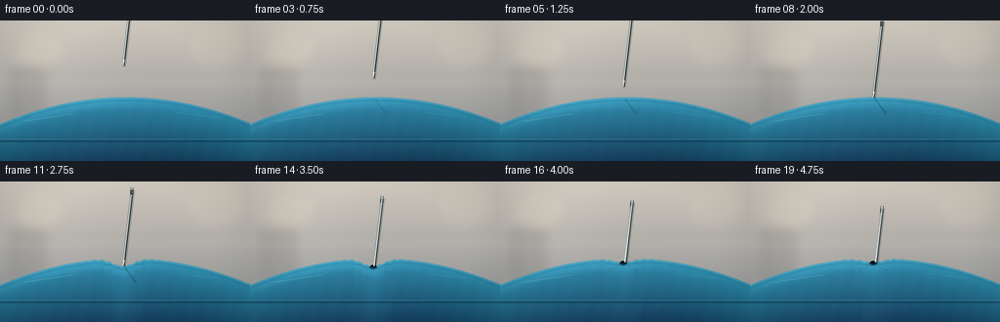
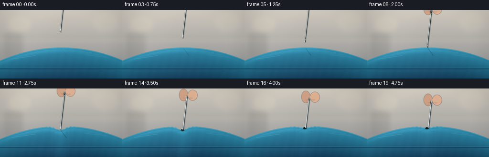
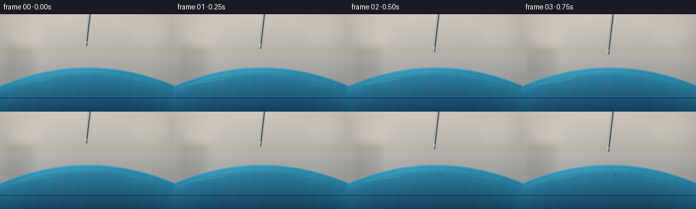

CODING AGENTS AS PIXEL WORLD MODELS
traex/GPT-5.6-Sol · mechanics_0035
点击播放 · 原生 RGB 像素
逐轮保存的候选
回放视频、检查图与代码变化。
每份候选均可单独播放。实际图片检查记录在下方工具轨迹中。
候选 01播放与检查图
点击播放 · 原生 RGB 像素

展开代码变化
--- 上一保存版本
+++ 本次保存版本
@@ -0,0 +1,218 @@
+from pathlib import Path
+import numpy as np
+from PIL import Image, ImageDraw, ImageFilter
+import artifact_io
+
+# Deterministic procedural macro shot of a sewing needle puncturing blue vinyl.
+W, H, N = 256, 144, 20
+S = 4
+SW, SH = W*S, H*S
+rng = np.random.default_rng(35)
+
+# Fine static sensor/vinyl texture; fixed in scene space to avoid temporal flicker.
+noise = rng.normal(0, 1, (SH, SW)).astype(np.float32)
+noise_im = Image.fromarray(np.uint8(np.clip(noise*24+128,0,255))).filter(ImageFilter.GaussianBlur(1.5))
+noise_soft = (np.asarray(noise_im).astype(np.float32)-128.0)/12.0
+
+
+def sc(v): return int(round(v*S))
+def pts(seq): return [(sc(x), sc(y)) for x,y in seq]
+
+def ellipse(draw, box, **kw): draw.ellipse(tuple(sc(v) for v in box), **kw)
+def line(draw, xy, width=1, **kw): draw.line(pts(xy), width=max(1,sc(width)), **kw)
+
+def smoothstep(t):
+ t=np.clip(t,0.0,1.0); return t*t*(3-2*t)
+
+
+def needle_tip_y(i):
+ if i <= 7: return 46.0 + 4.28*i
+ if i <= 13: return 79.0 + 2.5*(i-8)
+ return 95.0 + 2.05*(i-14)
+
+
+def make_background():
+ yy=np.arange(SH)[:,None]/S
+ xx=np.arange(SW)[None,:]/S
+ # Warm, softly defocused bedroom background.
+ top=np.array([206,199,188],np.float32)
+ bot=np.array([155,156,155],np.float32)
+ q=np.clip(yy/105,0,1)[...,None]
+ arr=top*(1-q)+bot*q
+ arr=np.broadcast_to(arr,(SH,SW,3)).copy()
+ arr += (6*np.exp(-((xx-58)/52)**2)[...,None])
+ arr += noise_soft[...,None]*0.45
+ im=Image.fromarray(np.uint8(np.clip(arr,0,255)),'RGB')
+ d=ImageDraw.Draw(im,'RGBA')
+ # out-of-focus wall/baseboard and furnishings
+ d.rectangle((0,sc(57),SW,sc(61)), fill=(111,111,106,35))
+ d.rectangle((0,sc(61),SW,sc(64)), fill=(238,231,213,90))
+ ellipse(d,(17,13,65,49),fill=(239,226,197,45))
+ ellipse(d,(194,5,248,47),fill=(232,220,198,35))
+ d.rounded_rectangle((sc(8),sc(47),sc(48),sc(101)),radius=sc(5),fill=(73,69,65,32))
+ return im.filter(ImageFilter.GaussianBlur(sc(4.5)))
+
+BG=make_background()
+
+
+def top_curve(i):
+ x=np.arange(SW,dtype=np.float32)/S
+ base=78.6 + 0.00165*(x-129.0)**2
+ # Pressure first creates a deep, broad dimple; after puncture vinyl partially rebounds.
+ if i < 8:
+ amp=0.0
+ elif i <= 13:
+ amp=12.4*smoothstep((i-8)/5)
+ else:
+ amp=12.4*(1-smoothstep((i-13)/3))*0.75 + 4.0*smoothstep((i-13)/3)
+ center=126.0
+ dimple=amp*np.exp(-((x-center)/15.0)**2)
+ # Fine radial puckering appears while loaded and remains around the pinhole.
+ wrinkle_strength=(smoothstep((i-8)/5) if i<=13 else 0.55)
+ r=x-center
+ wrinkles=wrinkle_strength*1.0*np.sin(np.abs(r)*0.78+0.6)*np.exp(-((np.abs(r)-16)/15)**2)
+ wrinkles *= (np.abs(r)>5)
+ return base+dimple+wrinkles
+
+
+def draw_mattress(frame, i, ytop):
+ arr=np.asarray(frame).astype(np.float32)
+ Y=np.arange(SH,dtype=np.float32)[:,None]/S
+ X=np.arange(SW,dtype=np.float32)[None,:]/S
+ top=ytop[None,:]
+ depth=np.maximum(0,Y-top)
+ mask=Y>=top
+ # Rich blue PVC, brighter at its curved crown and darker toward side wall.
+ z=np.clip(depth/68,0,1)
+ crown=np.exp(-((X-105)/88)**2)
+ R=43*(1-z)+13*z + 8*crown
+ G=133*(1-z)+49*z + 10*crown
+ B=164*(1-z)+76*z + 12*crown
+ # broad reflected softbox running across glossy vinyl
+ sheen=18*np.exp(-((depth-5.0)/5.5)**2)*np.exp(-((X-86)/105)**2)
+ R+=sheen*.55; G+=sheen; B+=sheen*1.08
+ # horizontal, subtly mottled vinyl grain
+ grain=noise_soft*0.95 + 0.8*np.sin(X*0.34+Y*0.08)
+ R+=grain; G+=grain; B+=grain
+ mat=np.stack([R,G,B],axis=2)
+ arr[mask]=mat[mask]
+ return Image.fromarray(np.uint8(np.clip(arr,0,255)),'RGB')
+
+
+def render(i):
+ # almost imperceptible exposure breathing, no distracting camera motion
+ im=BG.copy()
+ ytop=top_curve(i)
+ im=draw_mattress(im,i,ytop)
+ d=ImageDraw.Draw(im,'RGBA')
+
+ # Highlight tracing the convex top surface.
+ coords=[]
+ for k in range(0,SW,4):
+ coords.append((k,int((ytop[k]+1.0)*S)))
+ d.line(coords,fill=(170,231,238,72),width=sc(.7))
+ coords2=[(k,int((ytop[k]+3.5)*S)) for k in range(0,SW,4)]
+ d.line(coords2,fill=(6,61,89,35),width=sc(.8))
+
+ # Air-mattress welded side seam and plastic reflections.
+ line(d,[(0,123.5),(256,123.5)],width=2.2,fill=(5,43,69,105))
+ line(d,[(0,121.8),(256,121.8)],width=.75,fill=(101,188,203,75))
+ line(d,[(0,129.0),(256,128.2)],width=.6,fill=(75,152,176,40))
+ # blurred elongated specular streaks characteristic of vinyl
+ line(d,[(24,103),(74,95.5)],width=1.0,fill=(197,244,241,43))
+ line(d,[(177,94),(222,99)],width=.7,fill=(175,229,232,31))
+
+ tipx=126.0
+ surf=float(ytop[int(tipx*S)])
+ ty=needle_tip_y(i)
+
+ # Stress creases radiate from contact point, strongest just before puncture.
+ stress=(smoothstep((i-8)/5) if i<=13 else 0.68)
+ if stress>0:
+ for side,ln,dy in [(-1,23,5.5),(1,24,5.0),(-1,15,9.5),(1,16,10.5)]:
+ x0=tipx+side*3; x1=tipx+side*ln
+ yy0=surf+1.1; yy1=float(ytop[int(np.clip(x1*S,0,SW-1))])+dy
+ line(d,[(x0,yy0),((x0+x1)/2,yy1-1),(x1,yy1)],width=.7,
+ fill=(3,45,68,int(58*stress)))
+ line(d,[(x0,yy0-.7),((x0+x1)/2,yy1-1.8)],width=.35,
+ fill=(177,227,230,int(54*stress)))
+
+ # Needle shadow stretches over the vinyl while hovering / pressing.
+ if ty < surf+3:
+ gap=max(0,surf-ty)
+ alpha=int(52*(1-gap/38)) if gap<38 else 0
+ if alpha:
+ line(d,[(tipx+2,surf+2),(tipx+13,surf+17)],width=2.0,fill=(0,24,36,alpha))
+ else:
+ ellipse(d,(tipx-4.2,surf-.8,tipx+4.2,surf+3.7),fill=(0,28,40,66))
+
+ # Pinhole appears precisely when the point passes below the membrane.
+ if i>=14:
+ hole_a=int(150+70*smoothstep((i-14)/3))
+ ellipse(d,(tipx-3.5,surf-1.5,tipx+3.5,surf+2.6),fill=(4,24,31,hole_a))
+ ellipse(d,(tipx-2.0,surf-1.0,tipx+2.1,surf+1.25),fill=(1,8,12,240))
+ # raised wet-looking rim catches light
+ d.arc(tuple(sc(v) for v in (tipx-4.0,surf-2.2,tipx+4.0,surf+3.2)),185,350,
+ fill=(163,224,227,145),width=sc(.65))
+
+ # Needle: axis leans very slightly right toward its upper end.
+ # Keep the actual point visible until it penetrates; afterwards the lower part is occluded by vinyl.
+ visible_y=min(ty,surf+.15)
+ dx_per_y=-0.118 # x changes this much as y increases
+ length=79.0
+ topy=ty-length
+ topx=tipx-dx_per_y*length
+ endx=tipx + dx_per_y*(visible_y-ty)
+
+ # A softly moving hand/finger holding the upper needle enters frame naturally.
+ hand_layer=Image.new('RGBA',(SW,SH),(0,0,0,0)); hd=ImageDraw.Draw(hand_layer,'RGBA')
+ finger_y=topy-3
+ if finger_y<35:
+ # two out-of-focus fingertip pads near eye end
+ ellipse(hd,(topx-16,finger_y-12,topx+2,finger_y+13),fill=(205,154,124,225))
+ ellipse(hd,(topx+2,finger_y-10,topx+22,finger_y+12),fill=(222,172,140,230))
+ line(hd,[(topx-7,finger_y+7),(topx+12,finger_y+7)],width=.65,fill=(116,75,61,80))
+ hand_layer=hand_layer.filter(ImageFilter.GaussianBlur(sc(.55)))
+ im=Image.alpha_composite(im.convert('RGBA'),hand_layer).convert('RGB'); d=ImageDraw.Draw(im,'RGBA')
+
+ # Needle shadow offset, dark silhouette, polished shaft and fine white edge.
+ line(d,[(topx+1.1,topy+1.2),(endx+1.1,visible_y+1.2)],width=3.2,fill=(0,15,19,62))
+ line(d,[(topx,topy),(endx,visible_y)],width=2.45,fill=(32,41,44,255))
+ line(d,[(topx-.35,topy),(endx-.35,visible_y)],width=1.25,fill=(181,193,195,255))
+ line(d,[(topx-.65,topy+1),(endx-.65,visible_y-1)],width=.45,fill=(247,250,246,225))
+
+ # Sewing-needle eye (visible once its upper end enters the shot).
+ if topy>-7:
+ # elongated metal head and dark eye
+ line(d,[(topx,topy-1.2),(topx-.7,topy+7.5)],width=3.3,fill=(90,101,102,255))
+ line(d,[(topx-.35,topy-1),(topx-1.0,topy+7)],width=1.3,fill=(220,228,224,240))
+ ellipse(d,(topx-2.0,topy+1.0,topx+1.05,topy+6.0),fill=(23,29,30,235))
+ ellipse(d,(topx-1.35,topy+1.7,topx+.38,topy+5.1),fill=(154,163,160,130))
+
+ # Before puncture, sharpen the exposed triangular point over the surface.
+ if ty <= surf+.5:
+ # point is naturally the converging last few pixels
+ vx=endx-topx; vy=visible_y-topy; L=max(1,(vx*vx+vy*vy)**.5)
+ nx=-vy/L; ny=vx/L
+ bx=endx-vx/L*6.0; by=visible_y-vy/L*6.0
+ d.polygon(pts([(bx+nx*1.15,by+ny*1.15),(bx-nx*1.15,by-ny*1.15),(endx,visible_y)]),
+ fill=(184,194,193,255))
+ line(d,[(bx+.2*nx,by+.2*ny),(endx,visible_y)],width=.45,fill=(252,253,247,250))
+ else:
+ # shaft vanishes cleanly into the dark puncture
+ ellipse(d,(endx-1.45,surf-.8,endx+1.45,surf+1.45),fill=(10,14,15,170))
+ line(d,[(topx,topy),(endx,surf+.05)],width=1.15,fill=(180,193,195,255))
+ line(d,[(topx-.55,topy),(endx-.55,surf-.05)],width=.38,fill=(247,250,246,230))
+
+ # Gentle optical vignette and final antialias downsample.
+ arr=np.asarray(im).astype(np.float32)
+ yy,xx=np.mgrid[0:SH,0:SW]
+ rr=((xx-SW*.5)/(SW*.69))**2+((yy-SH*.48)/(SH*.88))**2
+ vig=np.clip(1-0.16*np.maximum(rr-.28,0),.78,1)[...,None]
+ arr*=vig
+ im=Image.fromarray(np.uint8(np.clip(arr,0,255)),'RGB').resize((W,H),Image.Resampling.LANCZOS)
+ return np.asarray(im,dtype=np.uint8)
+
+frames=np.stack([render(i) for i in range(N)],axis=0)
+artifact_io.save(frames,Path(__file__).resolve().parent)
+print('saved',frames.shape,frames.dtype)
候选 02播放与检查图
点击播放 · 原生 RGB 像素

展开代码变化
--- 上一保存版本
+++ 本次保存版本
@@ -164,17 +164,6 @@
topx=tipx-dx_per_y*length
endx=tipx + dx_per_y*(visible_y-ty)
- # A softly moving hand/finger holding the upper needle enters frame naturally.
- hand_layer=Image.new('RGBA',(SW,SH),(0,0,0,0)); hd=ImageDraw.Draw(hand_layer,'RGBA')
- finger_y=topy-3
- if finger_y<35:
- # two out-of-focus fingertip pads near eye end
- ellipse(hd,(topx-16,finger_y-12,topx+2,finger_y+13),fill=(205,154,124,225))
- ellipse(hd,(topx+2,finger_y-10,topx+22,finger_y+12),fill=(222,172,140,230))
- line(hd,[(topx-7,finger_y+7),(topx+12,finger_y+7)],width=.65,fill=(116,75,61,80))
- hand_layer=hand_layer.filter(ImageFilter.GaussianBlur(sc(.55)))
- im=Image.alpha_composite(im.convert('RGBA'),hand_layer).convert('RGB'); d=ImageDraw.Draw(im,'RGBA')
-
# Needle shadow offset, dark silhouette, polished shaft and fine white edge.
line(d,[(topx+1.1,topy+1.2),(endx+1.1,visible_y+1.2)],width=3.2,fill=(0,15,19,62))
line(d,[(topx,topy),(endx,visible_y)],width=2.45,fill=(32,41,44,255))
可观测工具轨迹
实际执行的命令与返回图片。
命令 1exit 0
/bin/bash -lc "cat prompt.txt && printf '\\n---RULES---\\n' && cat GENERATION_RULES.md && printf '\\n---SPEC---\\n' && cat task_spec.json"
命令 2exit 0
/bin/bash -lc "find . -maxdepth 2 -type f -printf '%p\\n' | sort | head -200"
命令 3exit 0
/bin/bash -lc 'cat artifact_io.py'
命令 4exit 0
/bin/bash -lc "cat > generate.py <<'PY'
from pathlib import Path
import numpy as np
from PIL import Image, ImageDraw, ImageFilter
import artifact_io
# Deterministic procedural macro shot of a sewing needle puncturing blue vinyl.
W, H, N = 256, 144, 20
S = 4
SW, SH = W*S, H*S
rng = np.random.default_rng(35)
# Fine static sensor/vinyl texture; fixed in scene space to avoid temporal flicker.
noise = rng.normal(0, 1, (SH, SW)).astype(np.float32)
noise_im = Image.fromarray(np.uint8(np.clip(noise*24+128,0,255))).filter(ImageFilter.GaussianBlur(1.5))
noise_soft = (np.asarray(noise_im).astype(np.float32)-128.0)/12.0
def sc(v): return int(round(v*S))
def pts(seq): return [(sc(x), sc(y)) for x,y in seq]
def ellipse(draw, box, **kw): draw.ellipse(tuple(sc(v) for v in box), **kw)
def line(draw, xy, width=1, **kw): draw.line(pts(xy), width=max(1,sc(width)), **kw)
def smoothstep(t):
t=np.clip(t,0.0,1.0); return t*t*(3-2*t)
def needle_tip_y(i):
if i <= 7: return 46.0 + 4.28*i
if i <= 13: return 79.0 + 2.5*(i-8)
return 95.0 + 2.05*(i-14)
def make_background():
yy=np.arange(SH)[:,None]/S
xx=np.arange(SW)[None,:]/S
# Warm, softly defocused bedroom background.
top=np.array([206,199,188],np.float32)
bot=np.array([155,156,155],np.float32)
q=np.clip(yy/105,0,1)[...,None]
arr=top*(1-q)+bot*q
arr=np.broadcast_to(arr,(SH,SW,3)).copy()
arr += (6*np.exp(-((xx-58)/52)**2)[...,None])
arr += noise_soft[...,None]*0.45
im=Image.fromarray(np.uint8(np.clip(arr,0,255)),'RGB')
d=ImageDraw.Draw(im,'RGBA')
# out-of-focus wall/baseboard and furnishings
d.rectangle((0,sc(57),SW,sc(61)), fill=(111,111,106,35))
d.rectangle((0,sc(61),SW,sc(64)), fill=(238,231,213,90))
ellipse(d,(17,13,65,49),fill=(239,226,197,45))
ellipse(d,(194,5,248,47),fill=(232,220,198,35))
d.rounded_rectangle((sc(8),sc(47),sc(48),sc(101)),radius=sc(5),fill=(73,69,65,32))
return im.filter(ImageFilter.GaussianBlur(sc(4.5)))
BG=make_background()
def top_curve(i):
x=np.arange(SW,dtype=np.float32)/S
base=78.6 + 0.00165*(x-129.0)**2
# Pressure first creates a deep, broad dimple; after puncture vinyl partially rebounds.
if i < 8:
amp=0.0
elif i <= 13:
amp=12.4*smoothstep((i-8)/5)
else:
amp=12.4*(1-smoothstep((i-13)/3))*0.75 + 4.0*smoothstep((i-13)/3)
center=126.0
dimple=amp*np.exp(-((x-center)/15.0)**2)
# Fine radial puckering appears while loaded and remains around the pinhole.
wrinkle_strength=(smoothstep((i-8)/5) if i<=13 else 0.55)
r=x-center
wrinkles=wrinkle_strength*1.0*np.sin(np.abs(r)*0.78+0.6)*np.exp(-((np.abs(r)-16)/15)**2)
wrinkles *= (np.abs(r)>5)
return base+dimple+wrinkles
def draw_mattress(frame, i, ytop):
arr=np.asarray(frame).astype(np.float32)
Y=np.arange(SH,dtype=np.float32)[:,None]/S
X=np.arange(SW,dtype=np.float32)[None,:]/S
top=ytop[None,:]
depth=np.maximum(0,Y-top)
mask=Y>=top
# Rich blue PVC, brighter at its curved crown and darker toward side wall.
z=np.clip(depth/68,0,1)
crown=np.exp(-((X-105)/88)**2)
R=43*(1-z)+13*z + 8*crown
G=133*(1-z)+49*z + 10*crown
B=164*(1-z)+76*z + 12*crown
# broad reflected softbox running across glossy vinyl
sheen=18*np.exp(-((depth-5.0)/5.5)**2)*np.exp(-((X-86)/105)**2)
R+=sheen*.55; G+=sheen; B+=sheen*1.08
# horizontal, subtly mottled vinyl grain
grain=noise_soft*0.95 + 0.8*np.sin(X*0.34+Y*0.08)
R+=grain; G+=grain; B+=grain
mat=np.stack([R,G,B],axis=2)
arr[mask]=mat[mask]
return Image.fromarray(np.uint8(np.clip(arr,0,255)),'RGB')
def render(i):
# almost imperceptible exposure breathing, no distracting camera motion
im=BG.copy()
ytop=top_curve(i)
im=draw_mattress(im,i,ytop)
d=ImageDraw.Draw(im,'RGBA')
# Highlight tracing the convex top surface.
coords=[]
for k in range(0,SW,4):
coords.append((k,int((ytop[k]+1.0)*S)))
d.line(coords,fill=(170,231,238,72),width=sc(.7))
coords2=[(k,int((ytop[k]+3.5)*S)) for k in range(0,SW,4)]
d.line(coords2,fill=(6,61,89,35),width=sc(.8))
# Air-mattress welded side seam and plastic reflections.
line(d,[(0,123.5),(256,123.5)],width=2.2,fill=(5,43,69,105))
line(d,[(0,121.8),(256,121.8)],width=.75,fill=(101,188,203,75))
line(d,[(0,129.0),(256,128.2)],width=.6,fill=(75,152,176,40))
# blurred elongated specular streaks characteristic of vinyl
line(d,[(24,103),(74,95.5)],width=1.0,fill=(197,244,241,43))
line(d,[(177,94),(222,99)],width=.7,fill=(175,229,232,31))
tipx=126.0
surf=float(ytop[int(tipx*S)])
ty=needle_tip_y(i)
# Stress creases radiate from contact point, strongest just before puncture.
stress=(smoothstep((i-8)/5) if i<=13 else 0.68)
if stress>0:
for side,ln,dy in [(-1,23,5.5),(1,24,5.0),(-1,15,9.5),(1,16,10.5)]:
x0=tipx+side*3; x1=tipx+side*ln
yy0=surf+1.1; yy1=float(ytop[int(np.clip(x1*S,0,SW-1))])+dy
line(d,[(x0,yy0),((x0+x1)/2,yy1-1),(x1,yy1)],width=.7,
fill=(3,45,68,int(58*stress)))
line(d,[(x0,yy0-.7),((x0+x1)/2,yy1-1.8)],width=.35,
fill=(177,227,230,int(54*stress)))
# Needle shadow stretches over the vinyl while hovering / pressing.
if ty < surf+3:
gap=max(0,surf-ty)
alpha=int(52*(1-gap/38)) if gap<38 else 0
if alpha:
line(d,[(tipx+2,surf+2),(tipx+13,surf+17)],width=2.0,fill=(0,24,36,alpha))
else:
ellipse(d,(tipx-4.2,surf-.8,tipx+4.2,surf+3.7),fill=(0,28,40,66))
# Pinhole appears precisely when the point passes below the membrane.
if i>=14:
hole_a=int(150+70*smoothstep((i-14)/3))
ellipse(d,(tipx-3.5,surf-1.5,tipx+3.5,surf+2.6),fill=(4,24,31,hole_a))
ellipse(d,(tipx-2.0,surf-1.0,tipx+2.1,surf+1.25),fill=(1,8,12,240))
# raised wet-looking rim catches light
d.arc(tuple(sc(v) for v in (tipx-4.0,surf-2.2,tipx+4.0,surf+3.2)),185,350,
fill=(163,224,227,145),width=sc(.65))
# Needle: axis leans very slightly right toward its upper end.
# Keep the actual point visible until it penetrates; afterwards the lower part is occluded by vinyl.
visible_y=min(ty,surf+.15)
dx_per_y=-0.118 # x changes this much as y increases
length=79.0
topy=ty-length
topx=tipx-dx_per_y*length
endx=tipx + dx_per_y*(visible_y-ty)
# A softly moving hand/finger holding the upper needle enters frame naturally.
hand_layer=Image.new('RGBA',(SW,SH),(0,0,0,0)); hd=ImageDraw.Draw(hand_layer,'RGBA')
finger_y=topy-3
if finger_y<35:
# two out-of-focus fingertip pads near eye end
ellipse(hd,(topx-16,finger_y-12,topx+2,finger_y+13),fill=(205,154,124,225))
ellipse(hd,(topx+2,finger_y-10,topx+22,finger_y+12),fill=(222,172,140,230))
line(hd,[(topx-7,finger_y+7),(topx+12,finger_y+7)],width=.65,fill=(116,75,61,80))
hand_layer=hand_layer.filter(ImageFilter.GaussianBlur(sc(.55)))
im=Image.alpha_composite(im.convert('RGBA'),hand_layer).convert('RGB'); d=ImageDraw.Draw(im,'RGBA')
# Needle shadow offset, dark silhouette, polished shaft and fine white edge.
line(d,[(topx+1.1,topy+1.2),(endx+1.1,visible_y+1.2)],width=3.2,fill=(0,15,19,62))
line(d,[(topx,topy),(endx,visible_y)],width=2.45,fill=(32,41,44,255))
line(d,[(topx-.35,topy),(endx-.35,visible_y)],width=1.25,fill=(181,193,195,255))
line(d,[(topx-.65,topy+1),(endx-.65,visible_y-1)],width=.45,fill=(247,250,246,225))
# Sewing-needle eye (visible once its upper end enters the shot).
if topy>-7:
# elongated metal head and dark eye
line(d,[(topx,topy-1.2),(topx-.7,topy+7.5)],width=3.3,fill=(90,101,102,255))
line(d,[(topx-.35,topy-1),(topx-1.0,topy+7)],width=1.3,fill=(220,228,224,240))
ellipse(d,(topx-2.0,topy+1.0,topx+1.05,topy+6.0),fill=(23,29,30,235))
ellipse(d,(topx-1.35,topy+1.7,topx+.38,topy+5.1),fill=(154,163,160,130))
# Before puncture, sharpen the exposed triangular point over the surface.
if ty <= surf+.5:
# point is naturally the converging last few pixels
vx=endx-topx; vy=visible_y-topy; L=max(1,(vx*vx+vy*vy)**.5)
nx=-vy/L; ny=vx/L
bx=endx-vx/L*6.0; by=visible_y-vy/L*6.0
d.polygon(pts([(bx+nx*1.15,by+ny*1.15),(bx-nx*1.15,by-ny*1.15),(endx,visible_y)]),
fill=(184,194,193,255))
line(d,[(bx+.2*nx,by+.2*ny),(endx,visible_y)],width=.45,fill=(252,253,247,250))
else:
# shaft vanishes cleanly into the dark puncture
ellipse(d,(endx-1.45,surf-.8,endx+1.45,surf+1.45),fill=(10,14,15,170))
line(d,[(topx,topy),(endx,surf+.05)],width=1.15,fill=(180,193,195,255))
line(d,[(topx-.55,topy),(endx-.55,surf-.05)],width=.38,fill=(247,250,246,230))
# Gentle optical vignette and final antialias downsample.
arr=np.asarray(im).astype(np.float32)
yy,xx=np.mgrid[0:SH,0:SW]
rr=((xx-SW*.5)/(SW*.69))**2+((yy-SH*.48)/(SH*.88))**2
vig=np.clip(1-0.16*np.maximum(rr-.28,0),.78,1)[...,None]
arr*=vig
im=Image.fromarray(np.uint8(np.clip(arr,0,255)),'RGB').resize((W,H),Image.Resampling.LANCZOS)
return np.asarray(im,dtype=np.uint8)
frames=np.stack([render(i) for i in range(N)],axis=0)
artifact_io.save(frames,Path(__file__).resolve().parent)
print('saved',frames.shape,frames.dtype)
PY
python generate.py"命令 5exit 0
/bin/bash -lc "python generate.py && python - <<'PY'
import json, pathlib, numpy as np
p=pathlib.Path('.')
s=json.loads((p/'task_spec.json').read_text())
a=np.load(p/'pixels.npz')['pixels']
print('pixels', a.shape, a.dtype, 'frames', len(list((p/'frames').glob('*.png'))), 'index', (p/'index.html').stat().st_size)
assert a.shape==(s['height'],s['width'],s['frames'])
assert len(list((p/'frames').glob('*.png')))==s['frames']
PY"视觉工具实际返回图片 1

视觉工具实际返回图片 2

保存候选 2 份；完成命令 5 次；可验证图片返回 2 张。原始 API 响应与完整日志保留在本地。